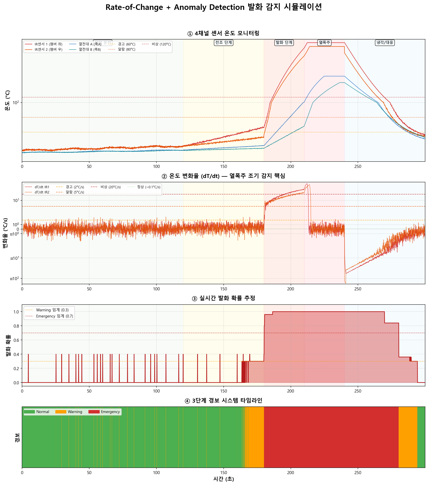

Rate-of-Change + Anomaly Detection 발화 감지
배터리 열폭주를 100ms 이내에 감지하고 1초 이내에 대응하는 물리 기반 알고리즘
0 Rate-of-Change + Anomaly Detection이란?
현재 속도가 60km/h라면 위험하지 않습니다. 하지만 0에서 60까지 3초 만에 올랐다면? 그건 사고 직전입니다.
온도도 마찬가지입니다. 80°C 자체는 높지만 즉각 위험은 아닐 수 있습니다. 그러나 40°C에서 80°C로 5초 만에 올랐다면? 그것은 열폭주(Thermal Runaway)의 시작입니다.
- 이중 IR 센서 + 열전대 4채널 온도를 100ms 간격으로 모니터링
- 온도 변화율(dT/dt)을 실시간 계산하여 열폭주 전조를 수 초 전에 감지
- 이중화 센서 교차검증으로 오경보를 필터링
- 3단계 경보(Normal/Warning/Emergency)로 단계별 자동 대응
1 배터리 열폭주 물리 현상
리튬이온 배터리가 파쇄될 때, 내부 단락이 발생하면 열폭주(Thermal Runaway)가 시작됩니다. 이것은 4단계로 진행되며, 한 번 시작되면 외부 개입 없이는 멈출 수 없습니다.
Stage 1에서 Stage 3까지 진행되는 시간은 수 초~수십 초에 불과합니다. 사람이 인지하고 판단하기에는 너무 빠릅니다. 따라서 100ms 단위 자동 감지가 반드시 필요합니다.
2 변화율(dT/dt) 분석
왜 절대 온도보다 변화율이 중요한가?
절대값 감시만 할 때
- 임계값 80°C 설정
- 정상 운전 중 70°C → "안전"
- 열폭주 시작 70°C → "안전" (같은 온도!)
- 80°C 도달 시 이미 Stage 2 진행 중
- 감지 시점이 너무 늦음
변화율(dT/dt) 감시할 때
- 임계값 5°C/s 설정
- 정상 운전 70°C (변화율 0.1) → "안전"
- 열폭주 시작 70°C (변화율 5.0) → "경보!"
- 같은 온도에서도 위험을 감지
- Stage 1 초기에 포착 가능
| 상태 | 변화율 (dT/dt) | 의미 | 판정 |
|---|---|---|---|
| 정상 운전 | ≈ 0.05~0.1°C/s | 마찰열에 의한 완만한 상승 | Normal |
| 부하 변동 | ≈ 0.5~1.5°C/s | 재료 투입량 변화, 정상 범위 | Normal |
| 전조 감지 | ≈ 2~5°C/s | 배터리 내부 발열 반응 시작 | Warning |
| 발화 진행 | ≈ 5~20°C/s | 분리막 용융, 내부 단락 확대 | Emergency |
| 열폭주 | > 50°C/s | 양극 분해, 산소 방출, 발화/폭발 | Emergency |
실제 시스템에서는 변화율만 보는 것이 아니라 4개 Layer를 동시에 감시합니다:
- Layer 1 — 절대값: T > 80°C 즉시 알람 (마지노선)
- Layer 2 — 1차 변화율 (dT/dt): 열폭주 전조 감지 (핵심)
- Layer 3 — 2차 변화율 (d²T/dt²): "변화율이 가속 중" 확인
- Layer 4 — 이중화 교차검증: 센서 고장 vs 실제 발화 구분
3 이중화 센서 교차검증
단일 센서에 의존하면 센서 고장 = 시스템 사각지대가 됩니다. 배터리 파쇄처럼 생명과 직결된 공정에서는 이중화(Redundancy)가 필수입니다.
센서 배치 구조
교차검증 로직
| IR1 | IR2 | 차이 | 판정 |
|---|---|---|---|
| 높음 | 높음 | 작음 (<15°C) | 실제 발화 (양쪽 모두 감지) |
| 높음 | 정상 | 큼 (>15°C) | 편측 이상 또는 센서 오류 가능성 |
| 정상 | 높음 | 큼 (>15°C) | 편측 이상 또는 센서 오류 가능성 |
| 정상 | 정상 | 작음 | 정상 |
- 센서 1개 고장해도 나머지 1개로 감지 지속 (가용성 향상)
- 오경보 감소: 한쪽만 높으면 확률을 50% 감소시켜 불필요한 비상정지 방지
- 위치 추정: 두 센서의 온도 차이로 발화 위치(좌/우)를 추정 가능
- 렌즈 오염 감지: 한쪽 IR 센서 렌즈에 분진이 쌓이면 판독 차이 발생 → 점검 알림
4 3단계 경보 시스템
변화율 < 2°C/s
정상 운전 유지
변화율 2~5°C/s
투입 감속 + 감시 강화
변화율 > 5°C/s
비상정지 + N&sub2; 퍼지
Emergency 대응 시퀀스
배터리 열폭주는 Stage 2(분리막 용융)에서 Stage 3(발화)까지 수 초밖에 걸리지 않습니다. 사람이 화면을 보고 판단하고 버튼을 누르는 데 최소 3~5초가 걸립니다. 따라서 감지부터 1차 대응(질소 퍼지)까지 반드시 자동화되어야 하며, 목표는 100ms 감지 + 100ms 질소 퍼지 = 200ms 이내 1차 대응입니다.
5 시뮬레이션 결과 분석

시뮬레이션은 300초(5분) 동안의 발화 시나리오를 재현합니다. 4개의 그래프를 하나씩 살펴보겠습니다.
4채널 센서 온도 모니터링
X축: 시간 (초) | Y축: 온도 (°C, 대수 스케일)
- 빨간선 (IR1): 챔버 좌측 IR 센서 — 발화 지점에 가장 가까워 가장 먼저, 가장 높이 올라감
- 주황선 (IR2): 챔버 우측 IR 센서 — 반대편이므로 지연 상승, 열 전파를 확인
- 파란선 (TMP-A): 축A 베어링 열전대 — 챔버보다 느리게 상승 (열 전도 시간)
- 청록선 (TMP-B): 축B 베어링 열전대 — 가장 먼 곳, 가장 느린 반응
0~120초(녹색 구간)에서 35~40°C 정상 범위를 유지하다가, 120초부터 점선 경고선(60°C)을 돌파하고, 180초 이후 급격히 상승하여 열폭주 시 800°C까지 치솟습니다. Y축이 대수 스케일인 이유는 열폭주 온도가 정상의 20배 이상이기 때문입니다.
온도 변화율 (dT/dt)
X축: 시간 (초) | Y축: 변화율 (°C/s, 대수 스케일)
- 초록 점선 (0.1°C/s): 정상 기준선
- 노란 점선 (2°C/s): Warning 임계값 — 이 선을 넘으면 "뭔가 이상하다"
- 주황 점선 (5°C/s): Alarm 임계값 — 발화 전조
- 빨간 점선 (20°C/s): Emergency 임계값 — 열폭주 확정
정상 구간(0~120초)에서 변화율은 0.1°C/s 근처에서 안정적입니다. 120초 이후 변화율이 서서히 올라가기 시작하고, 180초에서 5°C/s를 돌파합니다. 열폭주 구간(210초~)에서는 50°C/s를 훌쩍 넘깁니다. 변화율 그래프는 절대 온도보다 수십 초 일찍 이상 징후를 보여줍니다.
실시간 발화 확률
X축: 시간 (초) | Y축: 확률 (0~1)
- 0.0: 발화 가능성 없음 (정상)
- 0.3 (노란 점선): Warning 임계 — 전조 감지 시작
- 0.7 (빨간 점선): Emergency 임계 — 비상정지 발동
- 1.0: 발화/열폭주 확정
정상 구간에서 0.0을 유지하다가, 전조 단계에서 0.3~0.4로 상승(Warning), 발화 단계에서 0.7~0.8로 상승(Emergency), 열폭주에서 1.0에 도달합니다. 냉각/대응 후에도 온도가 높으므로 확률이 서서히 감소합니다.
3단계 경보 시스템 타임라인
X축: 시간 (초) | 색상 바로 경보 상태를 직관적으로 표시
- 초록 (Normal): 정상 운전, 모든 지표 안전
- 주황 (Warning): 전조 감지, 투입 감속 + 감시 강화
- 빨강 (Emergency): 비상정지 + 질소 퍼지 + 소화 작동
Warning은 온도 60°C 이상 또는 변화율 2°C/s 이상일 때 발동됩니다. Emergency는 온도 80°C 이상 또는 변화율 5°C/s 이상일 때 발동됩니다. 두 조건 중 하나만 만족해도 해당 레벨로 상향됩니다 — "놓치는 것보다 과잉 반응이 낫다"는 안전 원칙입니다.
6 알고리즘 특징 / 장점 / 단점
특징
- 딥러닝이 아닌 물리 법칙(열역학)에 기반 — 배터리 열폭주의 본질인 "급격한 온도 변화"를 직접 감시
- 학습 데이터가 없어도 동작 가능 (실제 발화 데이터 불필요)
- 해석이 명확: "왜 경보가 울렸는가?"를 dT/dt 수치로 즉시 설명 가능
- IR 센서 2개 교차검증으로 센서 고장과 실제 발화를 구분
- 열전대(PT100) 2개는 베어링 온도를 보조적으로 확인
- 4채널 중 1개가 고장나도 나머지 3개로 판단 지속
장점 vs 단점
장점
- 초고속 응답 (<100ms): 단순 산술 연산만 필요, GPU 불필요
- 단순하고 신뢰성 높음: 코드 수백 줄이면 충분, 버그 가능성 낮음
- 열폭주 특화: 배터리 열폭주의 물리적 특성(급격한 온도 상승)에 최적화
- 설명 가능: "dT/dt가 5.2°C/s로 임계값 초과" — 누구나 이해 가능
- 학습 불필요: 임계값만 설정하면 바로 운용, 발화 사고 이력 데이터 필요 없음
- PLC 직접 구현: 엣지 컴퓨터 없이 PLC에서도 실행 가능
단점
- 센서 노이즈 민감: 순간적인 노이즈가 높은 dT/dt로 계산될 수 있음 → 이동평균 필터 필요
- 오경보 가능: 재료 투입 시 급격한 온도 변화가 발화로 오인될 수 있음
- 예측 불가: "앞으로 발화할 것인가?"는 판단 불가, 현재 상태만 감지
- 고정 임계값: 재료/계절/환경에 따라 임계값 수동 조정 필요
- 느린 발화 감지 어려움: 수 분에 걸쳐 서서히 올라가는 발화는 변화율이 낮아 놓칠 수 있음
7 슈레더 적용 시나리오
실제 배터리 파쇄 슈레더에 이 알고리즘을 적용할 때의 구체적인 시나리오입니다.
목표: 1초 이내 대응 완료
타임라인 요약: 감지부터 대응까지
모델 05(발화 감지)는 10개 AI 모델 중 가장 중요한 안전 모델입니다. 다른 모델들(베어링 이상, 칼날 마모 등)은 예방적 유지보수를 위한 것이지만, 이 모델은 인명과 시설을 보호하는 최후의 방어선입니다. 단순하지만 확실한 물리 기반 접근법이 생명을 지킵니다.